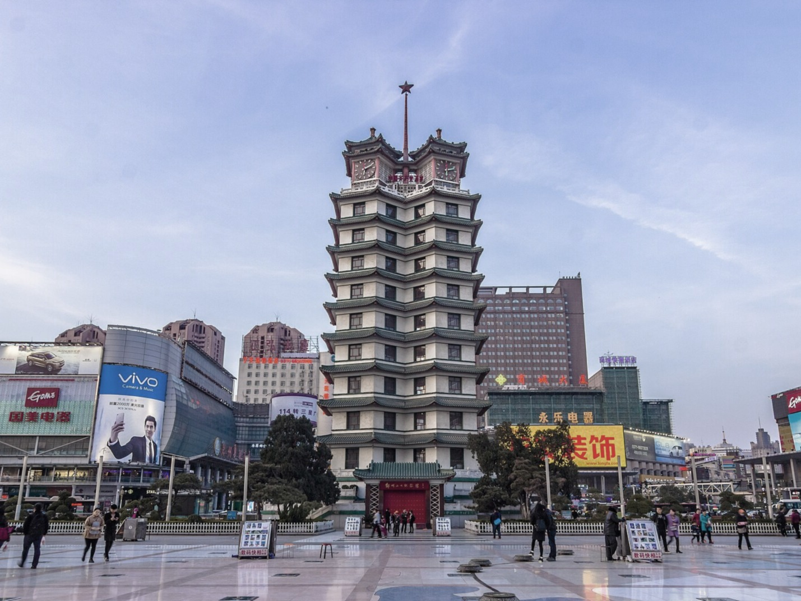
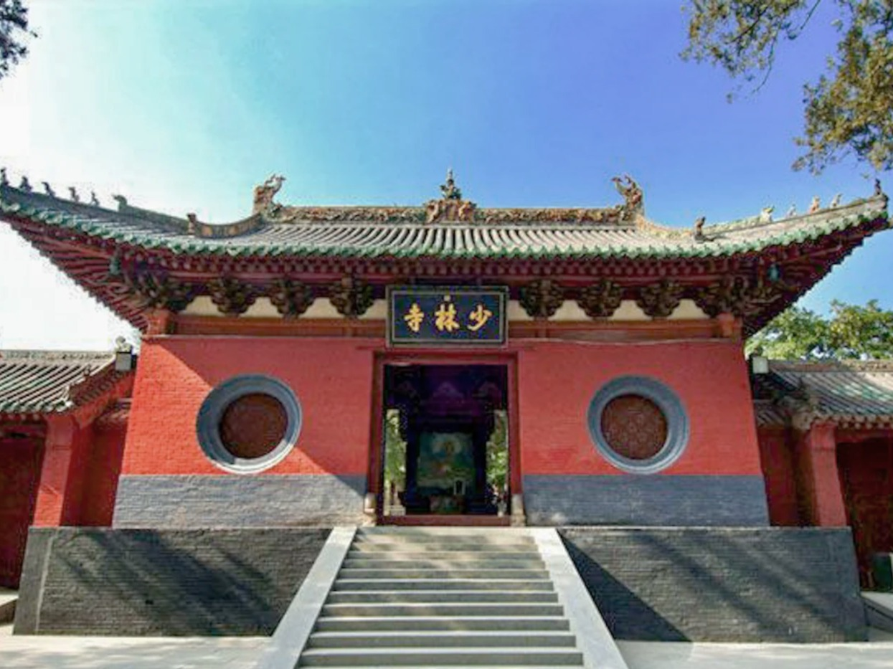
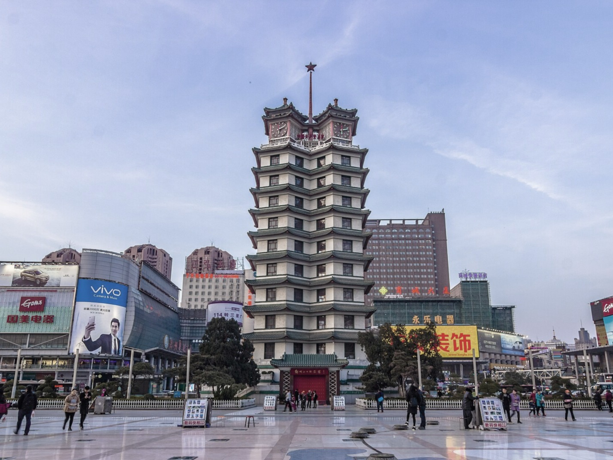
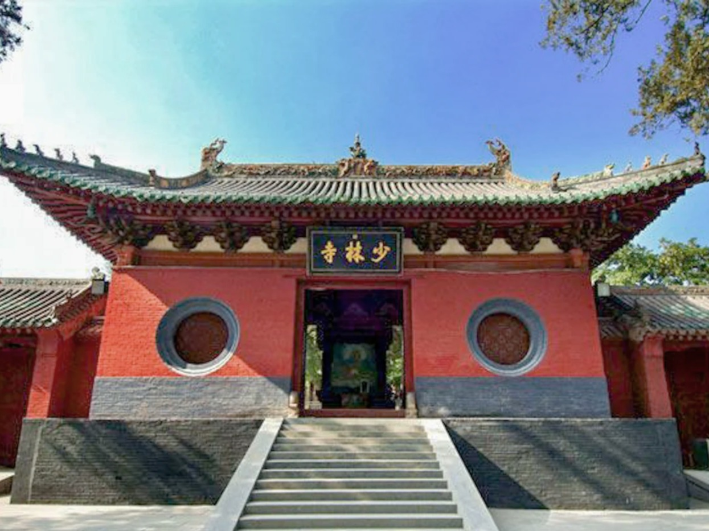

- 河南・鄭州 -
鄭州市（ていしゅうし）は、中華人民共和国河南省に位置する地級市。 河南省の省都である。中国の中原地区第一大都市である。 京津冀首都圏と珠江デルタを結ぶ南北陸上交通路と、 黄海北部の港湾と中国西北部を結ぶ東西陸上交通路が交わる交通結節点となっており、 中国における道路・鉄道の一番重要な交差点である。 殷代からの約3500年の歴史を経て今は中国の国家歴史文化名城となっており、 殷代には首都であった為、中国八大古都（北京、南京、杭州、西安、洛陽、開封、安陽、鄭州）となる。
- 歴史 -
3500年前に殷（商）王朝の都邑があった。 当時、青銅精練技術や陶器生産技術は相当発達していた。 紀元前11世紀の西周時代、周王は弟の管叔鮮をこの地に封じ、管国と言った。 春秋時代には鄭の大夫・子産の封地となった。隋代になってこの地に鄭州が設置された。 黄河中流に位置する鄭州は歴史上たびたび黄河の水害を受けたため、経済の発展は緩慢だった。 20世紀始めに隴海線と京広線が建設され、鄭州は南北大動脈の交差点となったため、 経済的地位はようやく上昇しはじめた。中国共産党政府の元で1953年に鄭県を廃止して鄭州市となった。 1954年、河南省省都が開封から鄭州に移った。
 


